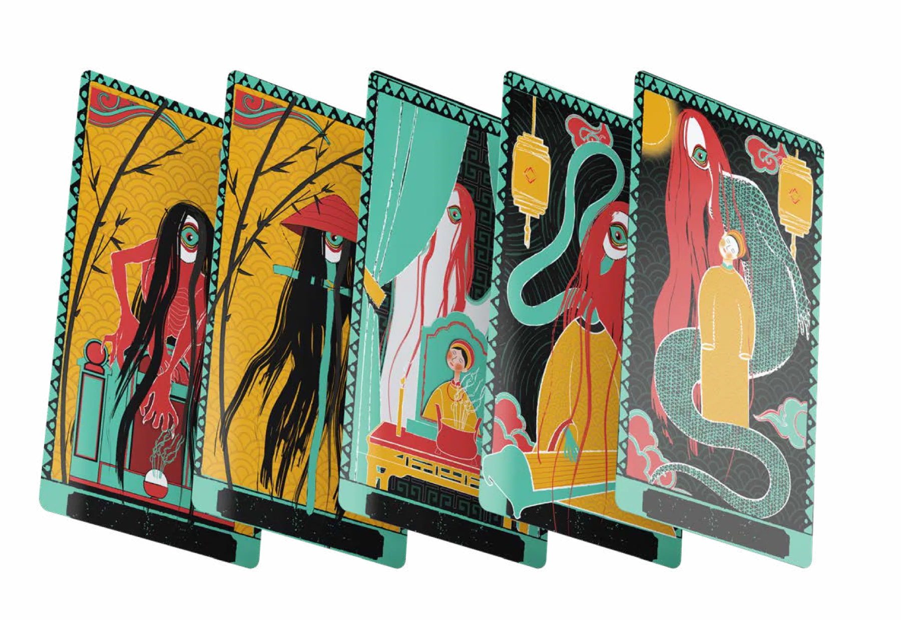

PHAM Nhu Quynh
Contact
PHAM Nhu Quynh
Contact
Tarot — Freaky Folklore MonsterIllustration, Tarot deck, Vietnamese folk tradition
Tarot — Freaky Folklore MonsterIllustration, jeu de tarot, tradition populaire vietnamienne
Vietnamese Folk TraditionTradition populaire vietnamienne Freaky Folklore Monster TAROT


Intention
This project brings Vietnamese folklore into a contemporary visual language, blending bold colors and striking forms to balance beauty with eeriness. It offers a tarot experience that feels both familiar and uncanny, while reconnecting users with the cultural depth and ancestral imagination of Vietnam.
Ce projet transpose le folklore vietnamien dans un langage visuel contemporain, où couleurs franches et formes saisissantes équilibrent beauté et étrangeté. Il propose une expérience du tarot à la fois familière et troublante, qui renoue avec la profondeur culturelle et l’imaginaire ancestral du Vietnam.